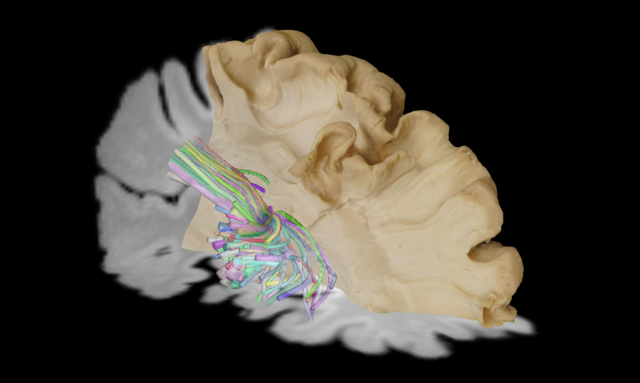

Tractome
Tractome (http://tractome.org): A tool for multimodal and interactive virtual dissection of white matter connectivity.
Incremental Clustering and ExplorationTractome is an interactive tool for visualisation, exploration and segmentation of tractography data. It supports neuroanatomists and medical doctors in their study of white matter anatomical structures from diffusion magnetic resonance imaging (dMRI) data. Unlike previous systems for tractography segmentation, Tractome is a computer-assisted tool in which the user interacts with a summary of the tractography instead of the whole set of streamlines. The summary is generated by clustering the tractography into a desired number of clusters, usually in the order of tens or one hundred. The summary shows only one representative streamline for each cluster, so that it is easier to interact with them in the 3D scene. The user can then iteratively select the representative streamlines of interest and re-cluster the associated sets or streamlines into smaller ones in order to incrementally reveal details of the anatomical structure of interest. The interaction is powered by novel efficient algorithms for fast clustering.
Enhanced Visualization with WebGPU and FURYTractome is has moved to the latest WebGPU rendering backend of FURY, which provides better performance and compatibility across different platforms. This transition enhances the visualisation capabilities of Tractome, allowing for more complex and detailed representations of tractography data. The integration with the latest FURY version ensures that users can take advantage of the most recent advancements in scientific visualisation technology.
Updated .trx Format SupportTractome has also adapted to the latest .trx format specifications, ensuring compatibility with the most recent advancements in tractography data representation.
Installation
- Unzip the source archive.
- Navigate to the source directory:
cd tractome - Install dependencies:
pip install -r requirements.txt - Install Tractome:
pip install .
Dependencies
- fury>=2.0.0a3 : https://fury.gl/ , provides high-level WGPU Actors for scientific visualisation.
- dipy>=1.11.0 : http://www.dipy.org , provides tools for dMRI data analysis.
- click>=8.1.8 : https://click.palletsprojects.com/ , for creating command-line interfaces.
- PySide6>=6.9.0 : https://www.qt.io/qt-for-python , Python bindings for the Qt libraries.
- trimesh>=4.6.12 : https://github.com/mikedh/trimesh , for working with triangular meshes.
- scikit-learn>=1.7.1 : http://scikit-learn.org , provides the Mini-Batch K-means clustering algorithm.
Multi-Platform Support
The software is multi-platform and works with the latest versions of Ubuntu, Windows, and MacOS.
Being a Python-based tool, Tractome is compatible with any operating system that can run Python, ensuring a wide range of usability.
Prepare Data
Tractome supports various data formats, including NIfTI (.nii, .nii.gz), Tractography (.trx, .trk, .tck) and Mesh (.obj) along with texture.
Before visualizing the tractography data, we need to ensure that we pre-process the tractography data and create embeddings for clustering by running the following command.
In case of .trk and .trxtractome_compute_dis_matrix YOUR_FILE_PATH
In case of .tck
tractome_compute_dis_matrix YOUR_FILE_PATH --reference YOUR_REFERENCE_T1_IMAGE_PATH To Run Tractome
tractome --tractogram TRACTOGRAM_PATH --t1 YOUR_T1_IMAGE_PATH --mesh YOUR_MESH_PATH --mesh_texture YOUR_MESH_TEXTURE_PATHThis command will launch the Tractome application with the specified paths for the tractogram, T1 image, mesh, and mesh texture. To interact with the application, use the mouse to rotate, zoom, and pan the 3D view. You can select clusters by clicking on them, and use the provided controls to re-cluster or segment the tractography data as needed.
There is a provision for 2D view of the T1 image and the selected clusters. 2D view provides the slice view of the T1 image along with the selected clusters overlaid on it. You can navigate through different slices using the slider provided in the interface. This feature helps in better understanding the spatial relationship between the tractography data and the anatomical structures in the T1 image.
Tractome Cheat Sheet
- a: Select all clusters. - n: Deselect all clusters. - i: Invert selection of clusters. - d: Delete selected clusters and create a new state. - e: Expand the cluster selection. - c: Collapse the cluster selection. - s: Show all clusters. - h: Hide unselected clusters. - r: Reset view.
References
- Garyfallidis E., et al., (2021). FURY: Advanced Scientific Visualization, JOSS
- Vavassori L., et al., (2025). Brain Dissection Photogrammetry: a Tool for Studying Human White Matter Connections Integrating Ex-vivo and In-vivo Multimodal Datasets, NatComms
- Sarubbo S, et al. (2024). Changing the Paradigm for Tractography Segmentation in Neurosurgery, Brain Sciences
- Garyfallidis E., et al., (2014) Dipy, a library for the analysis of diffusion MRI data, Frontiers in neuroinformatics
- Porro Munoz D, et al. (2015). Tractome, a visual data mining tool for brain connectivity analysis, Data Mining and Knowledge Discovery